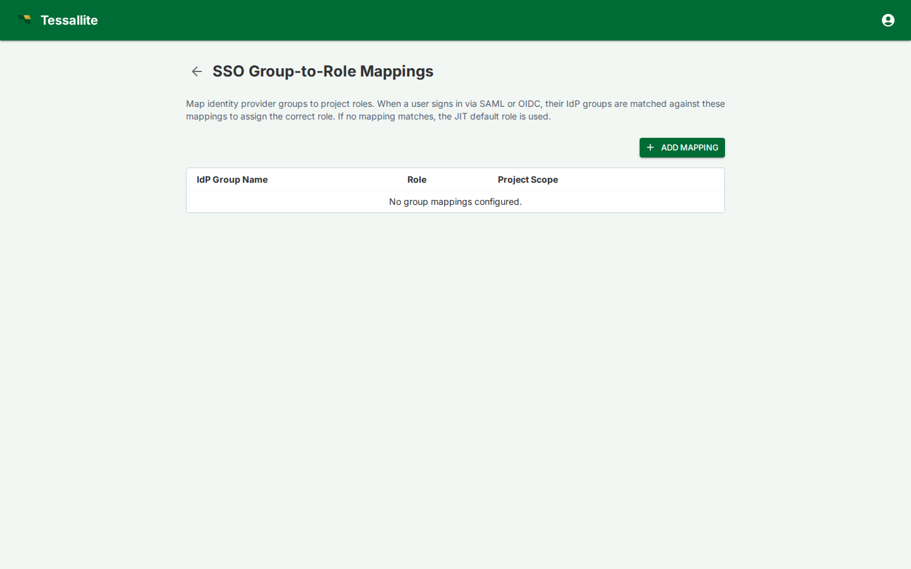

SSO Group Mappings

What this covers
SSO group mappings translate identity-provider groups into Tessallite workspace and project roles. They are evaluated when a user signs in through SAML or OIDC, allowing access to follow the user's IdP group membership instead of being managed only by local Tessallite user records.
What a mapping contains
| Field | Meaning |
|---|---|
| Provider group | Group name or claim value received from the identity provider. |
| Workspace | Tenant workspace where the mapping applies. |
| Project | Optional project scope. If omitted, the mapping applies at workspace level where supported. |
| Role | Tessallite role granted by the mapping: viewer, modeler, admin, or the audience role model_technical. |
| Status | Whether the mapping is active. |
Mapping a group to model_technical
Besides the three access roles, you can map an IdP group to model_technical. This is an audience role: it does not grant project permissions, it pins everyone in that group to the technical persona, so column-level security and data tags show them the technical view of the data. Use it for an "engineers" or "data platform" IdP group that should always see technical column detail. Because model_technical confers no access by itself, those users still need a viewer/modeler/admin mapping (or a local project binding) to actually reach a project. See Manage roles and Configure personas.
How mappings are applied
On SSO login, Tessallite reads the configured group claim, finds matching mappings, and applies the corresponding roles. If a user is removed from an IdP group, the mapped access is removed on the next sign-in. Local emergency admin access should be kept separate so administrators are not locked out by an IdP outage.
Good practice
Use narrow IdP groups that match business responsibilities. Avoid mapping broad groups such as "all employees" to modeler or admin roles. Review mappings alongside Project Settings, Manage Users, and Audit Log when investigating access issues.